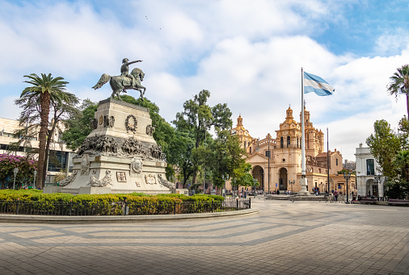
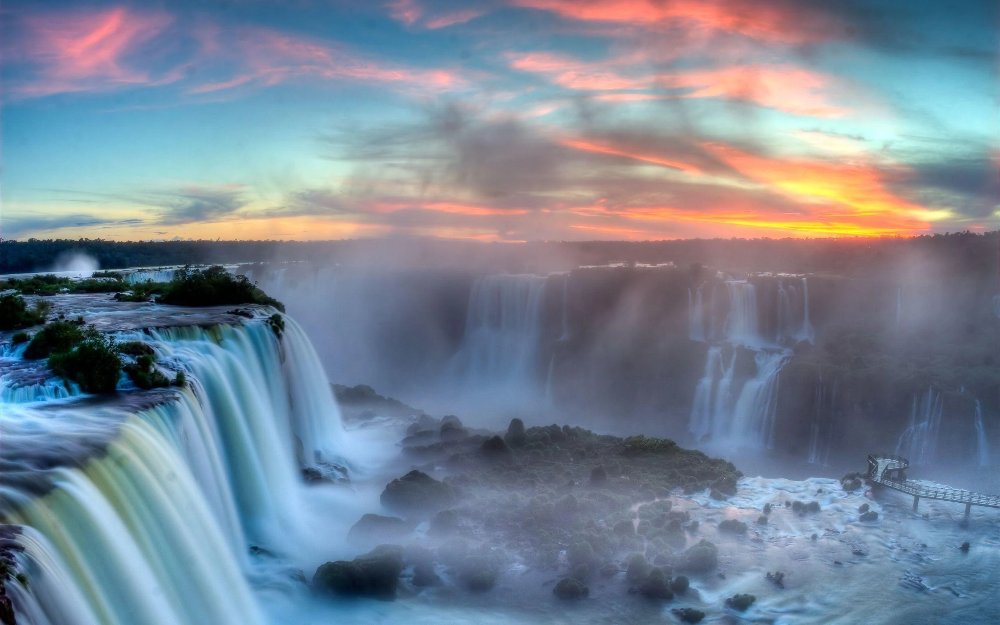

Nuestra breve historia de Argentina comienza con una llegada: en 1536 Pedro de Mendoza fundó la ciudad de Santa María de los Buenos Ayres, pero su población nativa no permaneció allí. Buenos Aires es una de las pocas ciudades del mundo que se fundó dos veces. La segunda fundación fue en 1580.
El territorio actual de Argentina fue parte del Virreinato del Perú hasta 1776 cuando el Rey de España, Carlos III, decidió establecer el Virreinato del Río de la Plata, debido a su importancia como salida al mar. Así, Buenos Aires se convirtió en el puerto comercial del Virreinato, uniendo Potosí con España. Inglaterra también codició este puerto, por lo que la ciudad rechazó dos veces las invasiones inglesas, en 1806 y 1807.
Cuando España fue ocupada por Francia, los habitantes del Virreinato del Río de la Plata buscaron independizarse de la corona española. El 25 de mayo de 1810, los funcionarios del gobierno se reunieron para determinar el camino a seguir y el 9 de julio de 1816 se formó un congreso de diputados de varias provincias y se proclamó la independencia. José de San Martín, padre del país de Argentina, desplegó a los militares para sentar las bases para la independencia, y emprendió campañas para que Chile y Perú también fueran independientes.
Manuel Belgrano también promovió la independencia argentina y luchó en primera línea para consolidarla.
Una vez que se declaró la independencia, dos corrientes políticas salieron a la fama: Unitaria y Federal. Los unitarios creían en un poder central, con sede en Buenos Aires, mientras que Los federales mantenían la autonomía de las provincias, independiente de la capital. Esto causó una guerra civil entre ambos lados. El primer presidente fue Rivadavia, unitario, en 1826.
En 1829, Juan Manuel de Rosas, quien retuvo el poder hasta 1852, asumió el cargo de gobernador de Buenos Aires. Su gobierno era autoritario, pero supervisó un aumento en el comercio y las exportaciones.
Las políticas de Rosas desaceleraron el crecimiento de las provincias, por lo que en 1851 Urquiza, gobernador de Entre Ríos, enfrentó a Rosas y lo derrotó en la batalla de Caseros.
Una vez hecho esto, convocó a un Congreso Constituyente en la provincia de Santa Fe en 1853 y aprobó una Constitución Nacional. La división reinó por casi 10 años. Recién en 1861 Bartolomé Mitre logró derrotar a Urquiza y unificar el país bajo el gobierno de Buenos Aires.
Los siguientes en la fila para la presidencia fueron Sarmiento, entre 1868 y 1874, y Avellaneda, entre 1874 y 1880. Cuando Julio A. Roca asumió el papel en 1880, se consolidó un modelo conservador. Alrededor de este tiempo comenzaron a aparecer los primeros partidos políticos, comenzando con la Unión Cívica Radical en 1890. En 1912, durante la presidencia de Roque Saénz Peña, se aprobó una ley que establece el voto electoral obligatorio y secreto.
Siguió un período de incertidumbre gubernamental, con el presidente radical Hipólito Yrigoyen derrocado por un golpe de Estado en 1930, seguido de una serie de gobiernos conservadores. En 1943, Castillo fue derrocado por un grupo de militares, entre ellos Perón, quien se convirtió en presidente por dos períodos a partir de 1946. Entre 1958 y 1966, Argentina estuvo gobernada por los radicales Frondizi e Illía. En 1966, este último fue derrocado por un golpe de estado. Onganía y Lanusse se sucedieron en el gobierno. En 1973, Héctor Cámpora ganó las elecciones con un boleto peronista y fue sucedido por Lastiri, Perón e Isabel Perón hasta 1976, cuando la dictadura en Argentina comenzó después de un golpe militar. En 1982, Argentina reclamó las Islas Malvinas, desencadenando una guerra con Inglaterra por el control del territorio que finalmente perdió. La dictadura también fue responsable de la desaparición de los ciudadanos argentinos y la falta de respeto a los derechos humanos. Cualquier persona con puntos de vista alternativos del gobierno militar fue perseguido. Los sindicalistas, políticos, artistas, intelectuales, poetas y muchos otros perdieron la vida, al igual que la gente común que sin tener una ideología distinta, apareció por casualidad en las listas del gobierno.
Después de las elecciones de 1983, el radicalismo regresó al gobierno con Raúl Alfonsín, quien estableció la democracia y juzgó a los responsables de crímenes contra la humanidad. Fue sucedido por Carlos Menem de 1989 a 1999. En 1997, la Alianza surgió como un partido político, y Fernando de la Rúa ganó las elecciones en 1999.
Con un ancho máximo de 219 km el Río de la Plata es considerado el río mas ancho del mundo.
El Argentinosaurus se encuentra entre los dinosaurios más grandes que se han conocido del mundo.
La Avenida 9 de julio tiene 110 metros de ancho en su calzada central, divididos en 16 carriles, se encuentra en el corazón de la ciudad de Buenos Aires
Con una altitud de 6960,8 msnm, el Aconcagua, es el pico más alto de los hemisferios meridional y occidental, el más alto de la Tierra después del sistema de los Himalayas (Asia) y, por tanto, la pico más elevado en América.
Conocida como La Ciudad más Austral del Mundo, Ushuaia es considerara una de las ciudades más atractivas para visitar del continente no solo en invierno, sino también durante todo el año gracias a la amplia variedad de opciones turísticas.
En el año 2011 las Cataratas del Iguazú fueron elegidas como una de las nuevas 7 maravillas naturales del mundo.